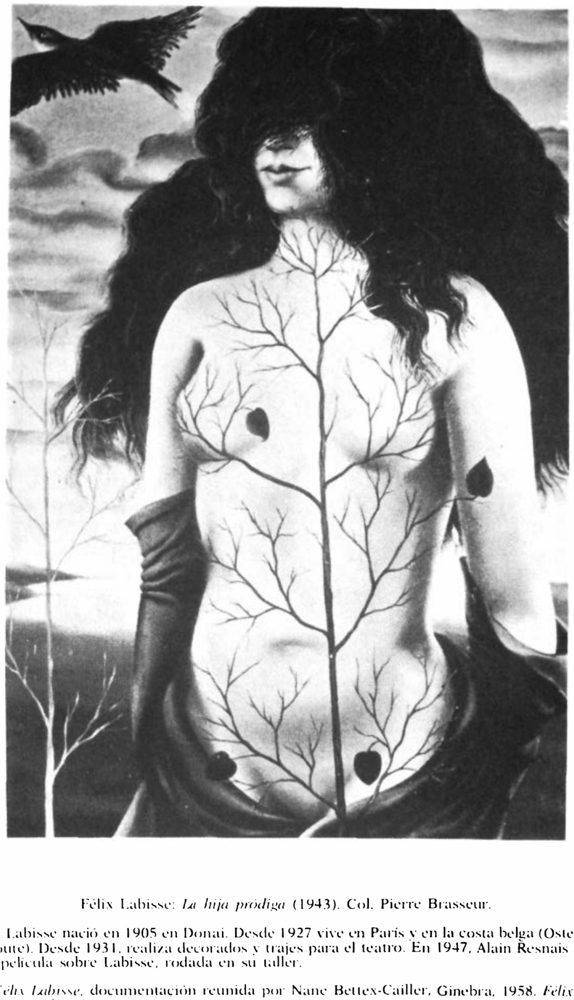

Lágrimas de Eros · Obra 110 de 124
La hija pródiga (La Fille prodigue)
Félix Labisse (1943)

Una mujer con la cara tapada por la melena y el torso recorrido por las ramas de un árbol, con un pájaro en vuelo. Es de 1943, el año en que, según su biografía oficial, Labisse pintó mucho y cambió de manera. En 1961 era del actor Pierre Brasseur. Se subastó en Montauroux en 2011 y en Sotheby's en 2020, con el libro de Bataille en la bibliografía.
Lo que hace que destaque
Una mujer con la cara tapada por la melena y el torso recorrido por las ramas de un árbol, con un pájaro en vuelo. Es de 1943, el año en que, según su biografía oficial, Labisse pintó mucho y cambió de manera. En 1961 era del actor Pierre Brasseur. Se subastó en Montauroux en 2011 y en Sotheby's en 2020, con el libro de Bataille en la bibliografía.
Contexto histórico
La procedencia de Sotheby's no nombra a Pierre Brasseur, solo al Dr. A. Boutin; el dato de Brasseur es del pie de Bataille, y lo de «actor» no está en las fuentes citadas. La nota biográfica del pie solo da datos y no se cita. «Colección particular» se deduce de la venta de 2020.
Autoría y procedencia
Félix Labisse (1905-1982), pintor e ilustrador surrealista francés, creador de universos fantásticos poblados de figuras híbridas y mujeres de tonos azulados y metamórficos.
En los libros
Las lágrimas de Eros, de Georges Bataille · Lámina de la p. 188
Ficha pendiente de contrastar con fuentes académicas.